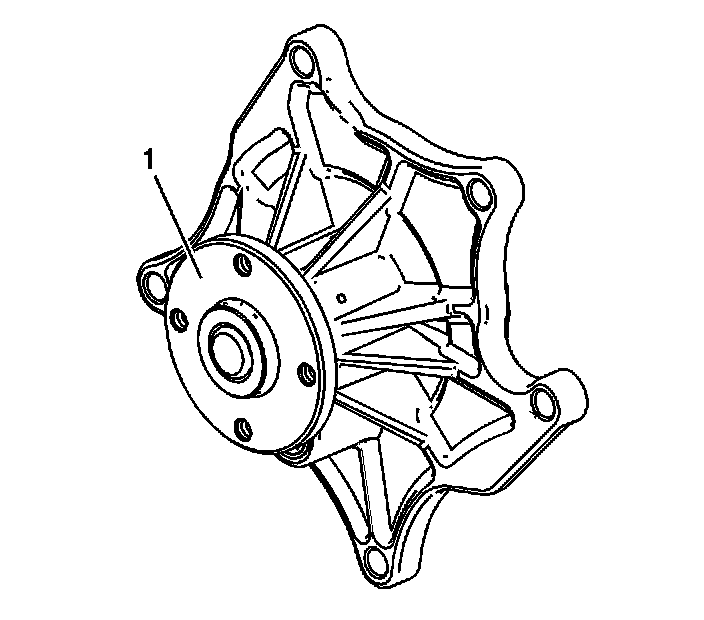
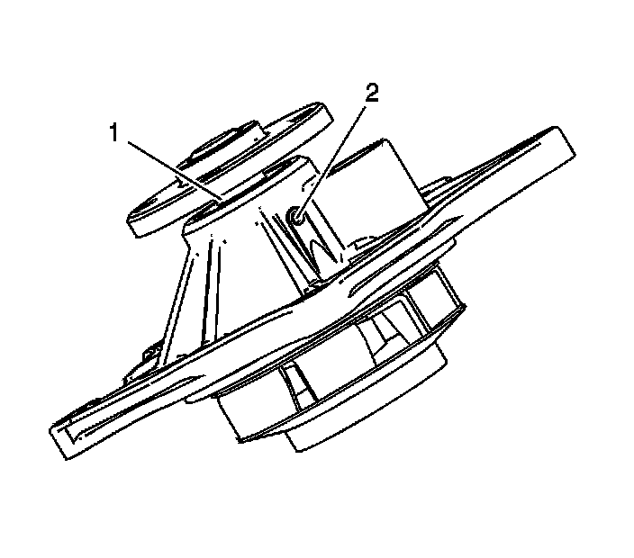
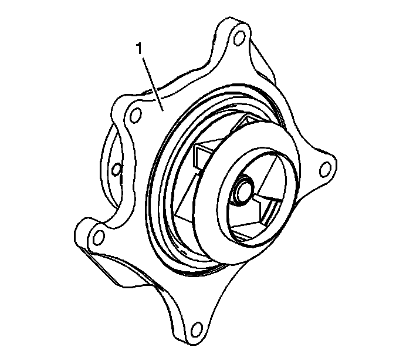

82. Water Pump Cleaning and Inspection
Water Pump Cleaning and Inspection
Notice: Do not immerse the water pump in solvent. The solvent may enter the water pump's permanently lubricated bearings and cause premature bearing failure.

1. Rotate the water pump hub (1). The water pump hub and impeller should turn straight and smoothly. If the hub wobbles, is noisy or feels "lumpy" when turned, replace the water pump.

2. Examine the water pump shaft (1) and the weep hole (2) in the water pump body for signs of leakage. If coolant leakage is evident, replace the water pump.

3. Examine the water pump sealing surface (1) for imperfections. If imperfections cannot be repaired, replace the water pump.